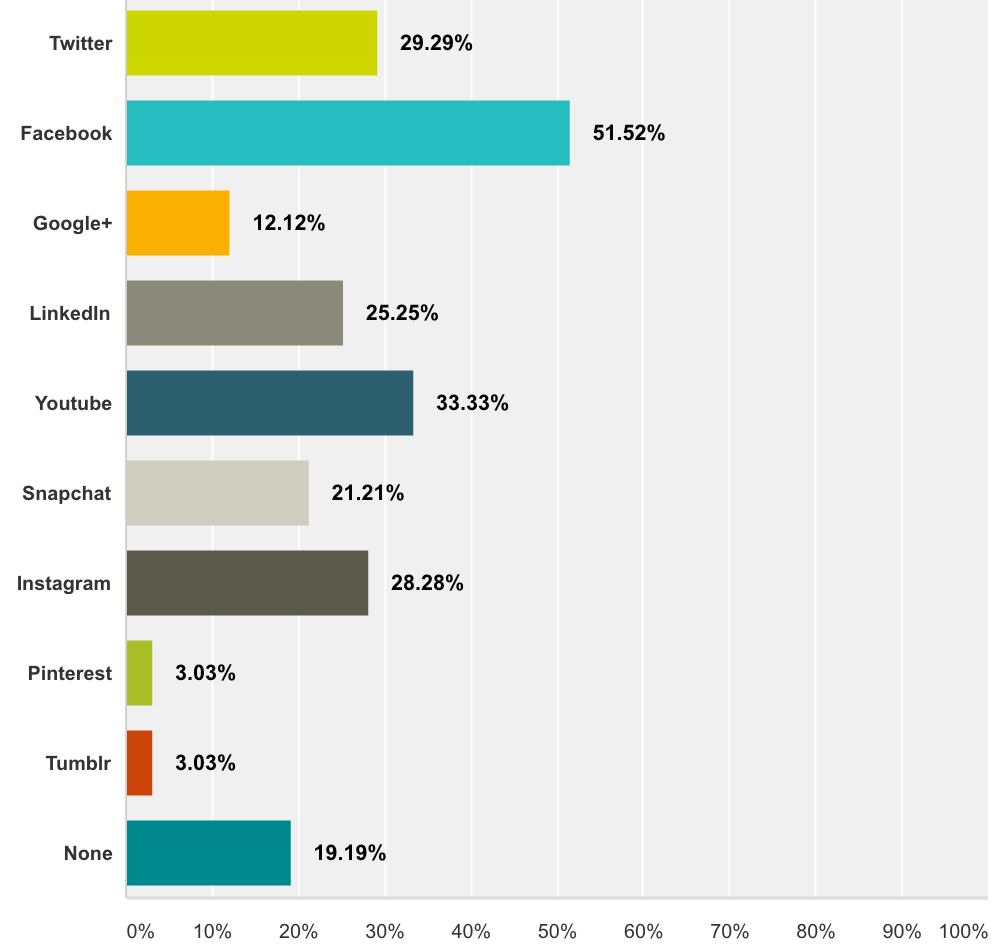

Media Planning & Analytics
How Can Braven Better Use Social Media To Increase Its Brand Awareness
In recent years, the usage of social media to build connections between organizations and clients has significantly increased. Corporations and companies utilize social media to announce new products and conduct promotion, meanwhile, public organizations also use social media to develop their brand reputation and attract donations. Miller (2016) reports that “more than 70 percent out of 1,613 non-profit organizations think that social media are very important communication channels”. Due to its low cost and user-friendly design, people and organizations have been using social media for multiple functions, for example, online marketing, fund-raising, and mobilization.
This article will study how a non-profit organization should better use social media to increase its brand awareness. Regarding to increase the brand awareness, social media content and platform types will be two major targets to be discussed for exploring the best solution.
Braven, an educational networking non-profit organization that was founded in 2013, also use social media as their major communication tool. Its mission is “to create a diverse talent network of emerging leaders that is at least 100,000 strong, and makes them prepared to thrive in high-impact roles after college graduation.” (Braven website, 2016). From 2015, their leadership program is targeting college students in Rutgers University-Newark and San Jose State University. The group of their target audience is large, but the fact is that they lack followers on their social media pages (Facebook, Twitter, & Instatram, 2016): merely 199 followers on their Twitter account, while 245 followers on their Facebook page. Comparing with these two social media, their Instagram account only has 86 followers. These data show that their social media pages are not attractive to social media users and their target audiences. Among all the followers, organization staff and leadership coaches occupied a big part, which means that few students followed Braven on social media.
According to Braven’s website (2016), “undergraduate student at San José State University or Rutgers University – Newark have a 2.5 cumulative GPA or higher can applied for the Braven’s program.” Mentioned in Braven’s 2014-2015 Results (2015), over a school year 2014 to 2015, they have 19 fellows from the Greater New York area. There are 60 total fellows from the Bay area. This means that compared to the State University of San Jose, which also has a partnership with Braven, fewer students of Rutgers University joined in the leadership program. Ms. Siobhan Lau, a founding team member of Braven, states that “ Braven’s brand is still not popular among students at Rutgers University-Newark, we would like to use Social media to expand Braven’s brand awareness.”
Moreover, mentioned in Hoffman, Pinkleton, Austin, and Reyes-Velázquez’s study (2014), college students’ communication methods have changed dramatically in current years. According to Lenhart, Purcell, Smith & Zickuhr’s study (2010), “72% of 18- to 29-year-olds online user use social network site”. It means that there is a large social media user group in the range of aged 18 to 29 and social media is a good tool to conduct marketing activities targeting this group of people. Social media is a major aspect on building Braven’s network and it promotes their brand to their target clients—college students. Thus, it is important to understand how to better use social media when targeting college students. From the amount of Braven’s account followers, it still has long way to go to achieve their vision.
Furthermore, Braven has a fairly low follower participation rate of their social media platform. Even though they have hundreds of followers, there are only one or two users left comments in a specific post. This leads to a concern that whether the social media types and content are used accurately. If the type is chosen wrong, and the contents posted are boring, nobody will be interested in participating in the discussion or leaving comments.
For addressing Braven’s problems such as lacking of brand awareness and user engagement on social media, this study suggests Braven using Facebook, Twitter, and YouTube as its main social media platforms to conduct branding activities. In addition, Braven is suggested to post content related to entertainment, jobs, and career advices on its social media networking sites for increasing user engagement and brand awareness.
- H1: Facebook, Instagram, and Twitter are the top three helpful social media platforms for increasing social media user engagement

The collected data presents a bit of distinction to the first hypothesis. Facebook, Twitter, and YouTube are the top three preferred social media networking sites by the Rutgers- Newark college students rather than Facebook, Twitter, and Instagram. Data shows that the most popular social media platform to engage is Facebook, which occupied 51.52% of all the selected social media networking sites. YouTube and Twitter rank second and third, which occupied 29.29% and 33.33% respectively. Instagram ranks fourth, and it means that even though the outcome is a bit difference to the hypothesis, they are closed [...]
This Project is my capstone project studying social media's effectiveness toward brand awareness.